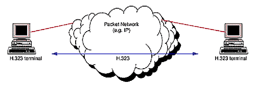

◉ Protocolos do sistema VoIP
➤ Protocolo H.323
O padrão H.323 [3] é parte da família de recomendações ITU-T (International Telecommunication
Union Telecommunication Standardization sector) H.32x, que pertence a série H da ITU-T,
e que trata de "Sistemas Audiovisuais e Multimídia". A recomendação H.323 tem o objetivo
de especificar sistemas de comunicação multimídia em redes baseadas em pacotes e que não
provêem uma Qualidade de Serviço (QoS) garantida. Além disso, estabelece padrões para
codificação e decodificação de fluxos de dados de áudio e vídeo, garantindo que
produtos baseados no padrão H.323 de um fabricante interopere com produtos H.323
de outros fabricantes.
Redes baseadas em pacotes incluem as redes IP (Internet Protocol) como a Internet, redes IPX (Internet
Packet Exchange), as redes metropolitanas, as redes de longa distância (WAN) e ainda conexões discadas
usando PPP.
O padrão H.323 é completamente independente dos aspectos relacionados à rede. Dessa forma, podem ser
utilizadas quaisquer tecnologias de enlace, podendo-se escolher livremente entre as que dominam o mercado
atual como Ethernet, Fast Ethernet, FDDI, ou Token Ring. Também não há restrições quanto à topologia da
rede, que pode consistir tanto de uma única ligação ponto a ponto, ou de um único segmento de rede, ou
ainda serem complexas, incorporando vários segmentos de redes interconectados. A figura 1 [7] ilustra
a comunicação entre dois terminais H.323 em uma rede baseada em pacotes.

➤ Protocolo SIP
O protocolo SIP é usado em chamadas de voz sobre IP ou VoIP. Isso permite que dois usuários se conectem
e realizem uma comunicação.
Para poder se comunicar na Internet, se conectar à rede ou usar qualquer um dos muitos serviços e
plataformas existentes, é necessário usar protocolos diferentes. Isso permitirá que essa conexão
seja estabelecida ou que se possa usar um determinado programa, por exemplo. Estamos falando de protocolos
como HTTP, TCP, IP, FTP, etc. Neste caso, SIP é um protocolo relacionado ao VoIP.
Sua sigla vem de Session Initiation Protocol, que em português pode ser traduzido como “Protocolo de
Iniciação de Sessão”. Com este protocolo é possível estabelecer comunicação entre dois dispositivos e
assim se realizar a comunicação através de uma rede IP.
Juntamente com outros protocolos se estabelecerá uma comunicação por voz, vídeo ou mensagem entre dois
usuários usando um computador ou um software. O protocolo SIP é responsável por estabelecer a localização,
disponibilidade ou recursos utilizados.
➤ Protocolo IAX2
IAX (protocolo Inter-Asterisk eXchange) é um dos protocolos utilizados pelo Asterisk. Ele é usado para
gerenciar conexões VoIP entre os servidores Asterisk e entre servidores e clientes que também usam
o protocolo IAX. O protocolo IAX agora geralmente se refere ao IAX2, a segunda versão do protocolo
IAX. O protocolo original tornou-se obsoleto em favor da IAX2.
IAX2 é robusto, cheio de novidades e muito simples em comparação com outros protocolos. Ele permite
lidar com um grande número de CODECs e um grande número de fluxos, o que significa que ele pode ser
usado para transportar praticamente qualquer tipo de dados. Esta capacidade torna muito útil para
videoconferências ou apresentações remotas. Está designado para dar prioridade para pacotes de voz
em uma rede IP.
IAX2 usa uma única porta UDP, geralmente 4569, para comunicações entre nós finais (terminais VoIP)
para sinalização e dados. O tráfego de voz é transmitido na banda, o que torna o IAX2 um protocolo
quase transparente para firewalls (Firewall) e realmente eficaz para trabalhar nas redes internas.
Nisto difere do SIP, que usa uma seqüência RTP fora de banda para entregar a informação.
IAX2 suporta Trunking (rede), onde um link simples permite enviar dados e sinalização através de
múltiplos canais. Quando o Trunking é executado, os dados de várias chamadas são tratados em um
único conjunto de pacotes, o que significa que um Datagrama IP pode fornecer informações para mais
chamadas sem criar latência adicional. Esta é uma grande vantagem para usuários de VoIP, onde os
cabeçalhos de IP são uma grande porcentagem da largura de banda usada.
O protocolo IAX2 foi criado por Mark Spencer para sinalização VoIP em Asterisk. O protocolo cria sessões
internas e essas sessões podem usar qualquer CODEC que possa transmitir voz ou vídeo. O IAX, essencialmente,
fornece controle e transmissão de fluxos de dados multimídia em redes IP. IAX é extremamente flexível
e pode ser usado com qualquer tipo de dados, incluindo o vídeo.
O design IAX foi baseado em muitos padrões de transmissão de dados, incluindo SIP (que é o mais comum
atualmente), MGCP e Protocolo de Transporte em Tempo Real.
O objetivo principal da IAX foi minimizar a largura de banda usada na transmissão de voz e vídeo através
da rede IP, com particular atenção ao controle e às chamadas de voz e ao suporte nativo para ser
transparente ao NAT. A estrutura básica do IAX é baseada na multiplexação da sinalização e no fluxo de
dados em uma única porta UDP entre dois sistemas. IAX é um protocolo binário e é projetado e organizado
de forma a reduzir a carga em fluxos de dados de voz. A largura de banda para algumas aplicações é
sacrificada em favor da largura de banda para VoIP.